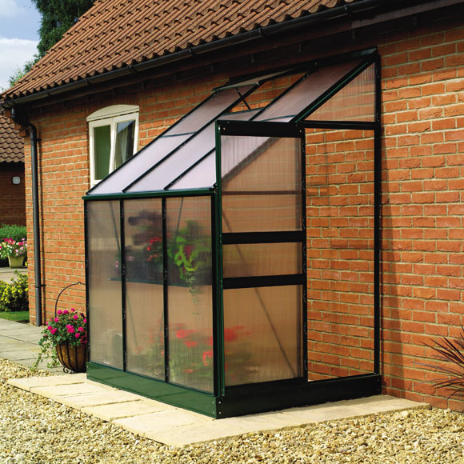
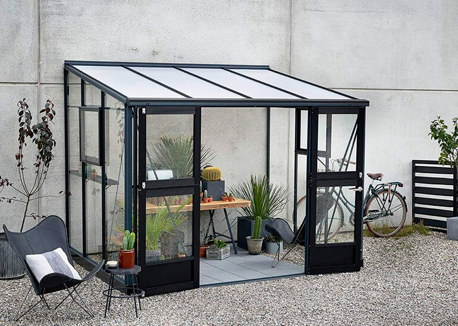

A lean-to design is used when a greenhouse is placed against the side of an existing building. It is built against a building, using the existing structure for one or more of its sides. It is usually attached to a house, but may be attached to other buildings. The roof of the building is extended with appropriate greenhouse covering material and the area is properly enclosed. It is typically facing south side. The lean-to type greenhouse is limited to single or double-row plant benches with a total width of 7 to 12 feet. It can be as long as the building it is attached to. It should face the best direction for adequate sun exposure. The advantage of the lean-to type greenhouse is that, it usually is close to available electricity, water, and heat. It is a least expensive structure. This design makes the best use of sunlight and minimizes the requirement of roof supports. It has the following disadvantages: limited space, limited light, limited ventilation and temperature control. The height of the supporting wall limits the potential size of the design. Temperature control is more difficult because the wall that the greenhouse is built on, may collect the sun's heat while the translucent cover of the greenhouse may lose heat rapidly. It is a half greenhouse, split along the peak of the roof.
A lean-to greenhouse is a type of greenhouse that is built against the side of another structure. Therefore, it has only one sloping roof and shares a wall with another building with a different intended use.Lean-to greenhouses are considered traditional structures, dating back to the Victorian period. They are extremely tough and wind resistant.Lean-to greenhouses can also be considered sun rooms when they are built against a residential property, and can be used for both edible crops and ornamentals.